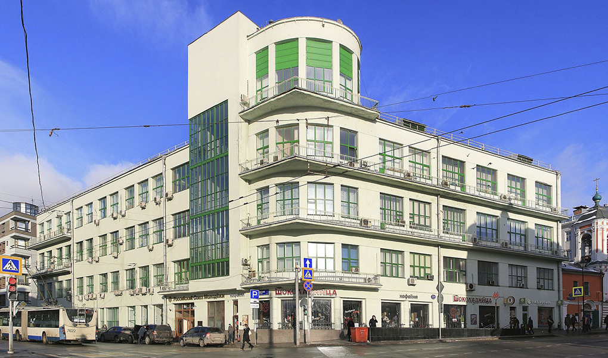

Здание Птицеводсоюза
Здание Птицеводсоюза — здание в стиле конструктивизма, расположенное по адресу Маросейка, 3/13, строение 1 в Басманном районе Москвы. Объект культурного наследия регионального значения.
История
С начала XVIII века на месте будущего здания Птицеводсоюза находилось подворье Николо-Угрешского монастыря. На территории подворья находились 2 каменных двухэтажных здания, одно из которых занимали часовня и гостиница для настоятеля и братии, другое — харчевня и трактир. В 1870-х годах обветшавшие здания были снесены, на их месте возвели новые двухэтажные каменные корпуса. Эта застройка не менялась до начала гонений на Николо-Угрешский монастырь, во время которых здания пострадали, и конфискация участка советской властью.
В 1928—1929 годах на месте подворья, вобрав в себя его фундамент и стены, по проекту архитектора Владимира Цветаева было выстроено здание для администрации «Птицеводсоюза» (Центрального яично-птичного союза сельскохозяйственной кооперации). В 1930-е годы в здании также располагались другие учреждения, включая «Союзкрупу», «Свиноводсоюз», «Инкубаторптицецентр», «Станкотрест», «Мосхимэнергострой» и «Льноцентр». За многочисленные вывески на фасаде здание получило среди служащих наименование «Дом трестов». С образованием соотвестствующих народных комиссариатов в середине 1930-х годов тресты выехали из здания. С 1935 по 1938 год здесь располагался Народный комиссариат финансов СССР, в 1938 году его место заняла канцелярия ЦК ВЛКСМ. С 1992 году в здании находится офис Российского союза молодёжи. На 2013 год РСМ, кофейня и магазины занимали 1 этаж, на 2—4 находились офисные помещения. В 2016 году здание было включено в перечень объектов культурного наследия.
В конце августа 2019 года стало известно, что здание отреставрируют.
Для того чтобы осуществить комплекс работ по сохранению этого памятника, специалистам предстоит провести историко-архивные и библиографические исследования, изучить инженерно-технические особенности здания, а также описать будущие архитектурные и конструктивные решения. Все этапы работ пройдут под руководством Мосгорнаследия. Руководитель Департамента культурного наследия города Москвы Алексей Емельянов.
Архитектура
Здание Птицеводсоюза было решено в эстетике конструктивизма с правильным чередованием зеркальных поверхностей окон и оштукатуренного с использованием мраморной крошки массива стен. Архитектор развил популярную в те годы тему «дома-корабля» в угловой части здания, приподнятой над основным объёмом и напоминающей капитанский мостик. Объёмный угол с протяжёнными балконами и большими вертикальными окнами служит «ответом» расположенному на Маросейке, 2 дому Варвары Петровны Разумовской и зданию Северного страхового общества на Ильинке, 23 работы Ивана Рерберга и Мариана Перетяковича. Цилиндрическая форма приподнята на полукруглых колоннах без баз и капителей, изначально служившими частью аркады для пешеходов. Со стороны Лублянского проезда возле угла располагается прямоугольный объём парадной лестничной клетки с угловым вертикальным витражом высотой в 4 этажа, который выгодно контрастирует с выдержанным горизонтальным членением фасадов. За годы эксплуатации здания вертикальные окна в возвышении углового объёма были наполовину заделаны, аркада — застроена, а оригинальное сплошное ограждение балконов было утрачено и заменено на решетчатое.